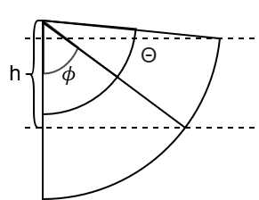

Sidescan Sonar
Holoocean has three different sidescan sonar sensor implementations:
These implementations have different tradeoffs in accuracy, speed, and memory usage.
Sensor |
Scanning Method |
General Speed |
Resolution (at Comparable Speed) |
Scene Representation |
Requirements |
|---|---|---|---|---|---|
Octree-based sampling |
Slow on first run, faster on subsequent runs |
Low-Medium |
Object collision meshes as octrees |
Memory space for octree storage |
|
CPU raycasting |
Fast, scales with number of rays |
Medium-High |
Object collision meshes |
CPU resources proporional to ray count |
|
GPU rendering |
Fast, depends on GPU capabilities |
High |
Rendered scene (image-based) |
Dedicated GPU |
Note
See Visualizing Sidescan Sonar for examples of how to use this sensor.
Octree Sidescan Sonar
Simulates a sidescan sonar with octrees. Has a narrow elevation and wide asimuth, and simulates both sides being scanned.
See SidescanSonar for the python API.
Example sensor definition:
{
"sensor_type": "SidescanSonar",
"socket": "SonarSocket",
"Hz": 10,
"configuration": {
"Azimuth": 170,
"Elevation": 0.25,
"RangeMin": 0.5,
"RangeMax": 40,
"RangeBins": 2000,
"AddSigma": 0.05,
"MultSigma": 0.05,
"ShowWarning": True,
"InitOctreeRange": 50,
"ViewRegion": False,
"ViewOctree": -10,
"WaterDensity": 997,
"WaterSpeedSound": 1480,
"UseApprox": True
}
}
Raycast Sidescan Sonar
Simulates a sidescan sonar with raycasting. Has a narrow elevation and wide asimuth, and unlike the Octree SSS, only simulates one side being scanned.
See RaycastSidescanSonar for the python API.
Example sensor definition:
{
"sensor_type": "RaycastSidescanSonar",
"socket": "SonarSocket",
"Hz": 10,
"configuration": {
"Azimuth": 85,
"Elevation": 0.25,
"RangeMin": 0.5,
"RangeMax": 40,
"RangeBins": 1000,
"AddSigma": 0.05,
"MultSigma": 0.05,
"ViewRegion": False,
"WaterDensity": 997,
"WaterSpeedSound": 1480,
"UseApprox": True,
"IgnorePlants": False
}
}
GPU Sidescan Sonar
Simulates a sidescan sonar with GPU rendering. Has a narrow elevation and wide asimuth, and unlike the Octree SSS sensor, it only simulates one side being scanned. Utilizes the GPU rendering pipeline, for faster simulation speed.
See GPUSidescanSonar for the python API.
Example sensor definition:
{
"sensor_type": "GPUSidescanSonar",
"socket": "SonarSocket",
"Hz": 10,
"configuration": {
"Azimuth": 85,
"Elevation": 0.25,
"RangeMin": 0.5,
"RangeMax": 40,
"RangeBins": 1000,
"AddSigma": 0.05,
"MultSigma": 0.05,
"ViewRegion": False,
"WaterDensity": 997,
"WaterSpeedSound": 1480,
"UseApprox": True,
"IgnorePlants": False
}
}
Resolution Calculation for Raycast and GPU SSS
The raycast and GPU sidescan sonars require sufficient angular sampling to accurately populate the desired range bins. This section provides a method for estimating the required angular resolution based on the sonar field of view and range-bin resolution.
Worst-Case Resolution Calculation
A conservative estimate of the required angular step size can be computed as:
where:
\(\Theta\) is the azimuth angle of a single SSS.
\(R_{\max}\) is the maximum sonar range.
\(R_{\mathrm{res}}\) is the range resolution.
Note
The range resolution can be computed from the number of range bins:
This formulation assumes that the seafloor intersects the edge of the sonar field of view at maximum range, as illustrated in the figure below:

Worst-case geometry used for estimating the required angular resolution.
The required number of samples is then:
This calculation represents a worst-case estimate and guarantees sufficient resolution across the full field of view.
Adjusted Resolution Calculation
In many scenarios the full field of view is not utilized. For example, when the seafloor is relatively flat and the sonar is operated at a fixed altitude, the maximum range may not occur at the edge of the field of view. In these cases, the required angular resolution can be reduced.
Given a sonar altitude \(h\), the utilized azimuth field of view \(\phi\) can be computed as:
as shown in the image below:
{kind=link}

Geometry for computing the utilized field of view based on sonar altitude.
The adjusted azimuth step size is then:
and the required number of samples becomes:
The resulting value of \(N\) may be significantly smaller than the worst-case estimate while still providing sufficient resolution for the observable portion of the scene.
Using the Computed Resolution
Because a sidescan sonar consists of two single SSS, each sensor should use the calculated samples N:
For each single Raycast Sidescan Sonar, set
AzimuthRayCount: Nin the config.For each single GPU Sidescan Sonar, set
ResolutionX: Nin the config.